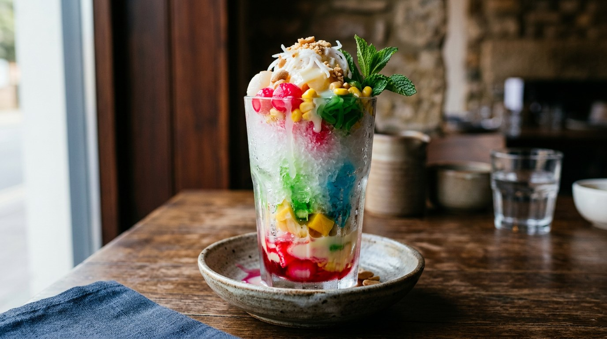

Fine shaved ice pressed into a mound, buried under red sala syrup, condensed milk and whatever the sweet counter has to offer — the dessert Thailand spells two ways and eats one way: immediately.

น้ำแข็งใส splits into น้ำแข็ง, ice, and ใส, "clear" — but that is not, strictly, its name. Thai Wikipedia and Thairath both point out the dessert should be written น้ำแข็งไส: ไส is the verb, to shave, the thing done to the block of ice. The menus of Thailand have voted the other way, and น้ำแข็งใส is what you will see on the cart. It goes by other names too — หวานเย็น (wan yen, "sweet cold") when the ice is mixed with other sweets such as lod chong, and จ้ำบ๊ะ (cham ba) for the classic of Phetchaburi and Khon Kaen.
Ice itself is an import. Silpa-Mag's account has it arriving from Singapore in the reign of Rama IV for the palace alone, before the Siam Ice Works made it ordinary; Thairath adds that King Rama V brought an ice-making machine back from Singapore after his 1871 state visit. What the Chinese cooks of Phetchaburi did with it was the invention that matters: leftover pa thong ko (fried dough) from the morning stall, fried crisp again, buried under a mound of shaved ice and red syrup. Condensed milk joined around 1947, when it became cheap and everywhere, and Wikipedia's layer-by-layer record of the finished bowl — fried dough or bread, then the ice mountain, then syrup, then the milk on top — is the same bowl that spread through Khon Kaen from about 1982.
The dish is a family. Silpa-Mag lines it up beside Japan's kakigori, Korea's bingsu, the Philippines' halo-halo, Malaysia's ais kacang and Vietnam's ching sam bo leung: every hot country that got ice invented its own mountain. Thailand's is the red one.
| Thai | English | Amount |
|---|---|---|
| น้ำแข็งไส | Ice, shaved or crushed fine | 1 block (~500 g) |
| ขนมปัง | Bread, cut small, or fried dough sticks | 2 slices |
| น้ำแดง | Red sala syrup | 2 tbsp |
| นมข้นหวาน | Sweetened condensed milk | 2–3 tbsp |
| เฉาก๊วย | Grass jelly, cubed | 100 g |
| ลูกชิด | Palm seeds in syrup | 2 tbsp |
| รากบัวเชื่อม | Lotus root in syrup | 2 tbsp |
| มันเชื่อม | Sweet potato in syrup | 2 tbsp |
| วุ้น | Agar jelly | 100 g |
| กะทิ | Coconut cream (optional) | 2 tbsp |
The stall bowl (TrueID): grass jelly, palm seeds, syruped sweet potato and lotus root, fancy agar jelly — every topping shop-bought at 15 baht a bag — spooned into the cup first, crushed ice on top, red or green syrup, then milk, the whole cup costing 15–20 baht at a vendor. The old-style bowl (Wikipedia): fried pa thong ko or bread cubes as the base, the ice pressed into a mountain, syrup, condensed milk — or coconut cream floated with jasmine, or jackfruit in syrup. The breakfast bowl (Thairath): bread and cornflake cereal under the ice, red syrup and condensed milk over it, with fruit, yoghurt ice cream and almond milk as the "premium" upgrades.
The ice itself. Wikipedia describes a block shaved into fine flakes and pressed into a column; TrueID's stall version is built on crushed ice (น้ำแข็งบด); Thairath's home version lets a blender stand in for the shaver. The result runs the whole range from snow to slush — all three still call it the same dessert.
The base layer. Wikipedia's จ้ำบ๊ะ starts with fried dough or bread cubes under the ice, and Thairath lines the bowl with bread and cereal. TrueID's stall bowl has no base at all — toppings first, ice on top, nothing to catch the melt. Whether the bowl needs a foundation is the one structural argument the sources have.
Milk or coconut. Thairath and TrueID finish with condensed milk and nothing else. Wikipedia's classic version offers both — condensed milk, or coconut cream floated with jasmine. The condensed milk is the common ground; the coconut cream belongs to the older, sweeter-shop style of หวานเย็น.
How strict the layers are. Wikipedia records a fixed order — base, ice, syrup, milk. TrueID's vendor does toppings, ice, syrup, milk. Thairath does not much care what order anything goes in, as long as the milk ends on top. The milk on top is the one rule nobody breaks.
This recipe is translated from the following Thai-language sources. Where they disagree, we've said so.
1. Thairath Lifestyle — "น้ำแข็งไส วิธีทำง่ายๆ เมนูคลายร้อนยอดฮิต" (the home method and topping bowls used here) — thairath.co.th
2. TrueID Food — "ชวนทำน้ำแข็งใสโบราณคลายร้อน" (the street-stall bowl, toppings and syrup order) — food.trueid.net
3. Thai Wikipedia — "น้ำแข็งไส" (the spelling, the names หวานเย็น and จ้ำบ๊ะ, and the history of the dish) — th.wikipedia.org
4. Silpa-Mag (ศิลปวัฒนธรรม) — "น้ำแข็งไส อาหารคลายร้อนนานาชาติ หลากวัฒนธรรม" by องค์ บรรจุน (the arrival of ice in Siam and the dessert's Asian family) — silpa-mag.com
5. Wongnai — "อาทิตย์เดือดยังต้องยอม! 10 ร้านน้ำแข็งไส ร้อนนี้ขอเบิลรัว ๆ" (the modern shaved-ice shop: snow texture, volcano bowls, syrup and topping choices) — wongnai.com